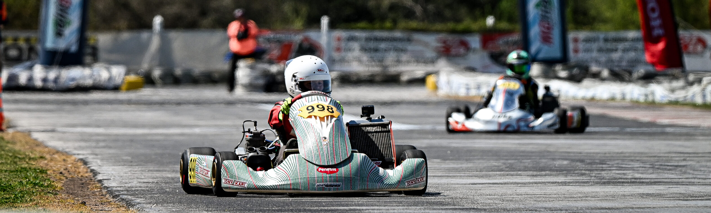
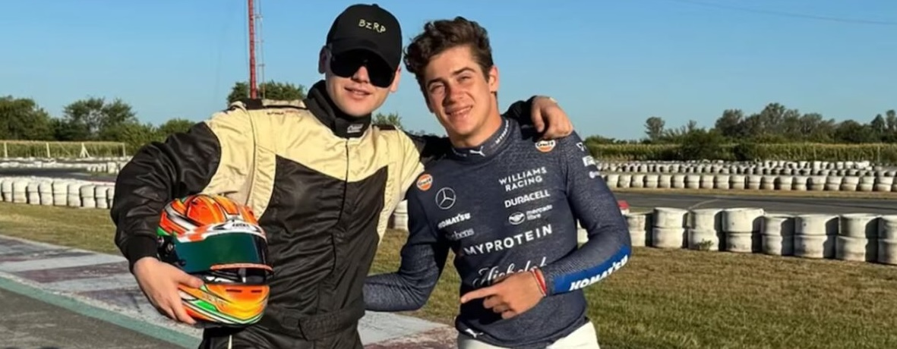
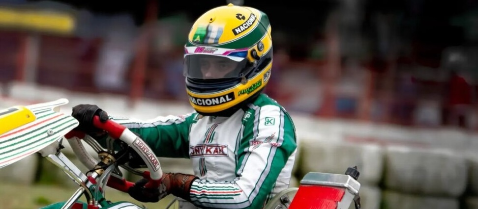
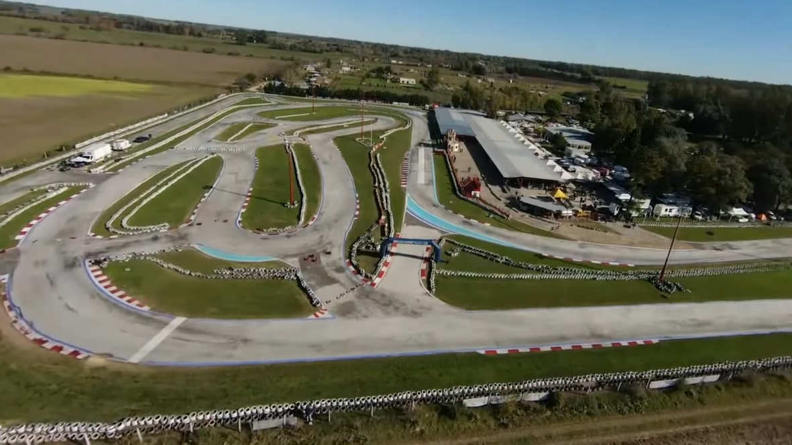

Kartódromo Internacional de Zárate
Pista de go kart
Se llevan a cabo campeonatos y eventos oficiales para pilotos, organizados por KartPlus. Aunque también se ofrece el servicio de kartings de alquiler, los cuales alcanzan los 85 km/h con motores de 13 hp, complementados por una de las mejores infraestructuras del país. Esta actividad está destinada a grupos familiares y de amigos.
Franco Colapinto en el Kartódromo de Zárate
El piloto argentino de Fórmula 1, Franco Colapinto, dio sus primeros pasos en el automovilismo en este kartódromo, donde comenzó a competir a los seis años. En abril de 2026 regresó al circuito para disfrutar de unas jornadas de karting junto a amigos y su antiguo equipo, Acosta Racing, antes de su exhibición en Buenos Aires. Su visita destacó la importancia de este lugar en su formación como piloto profesional. TN. La Nación.